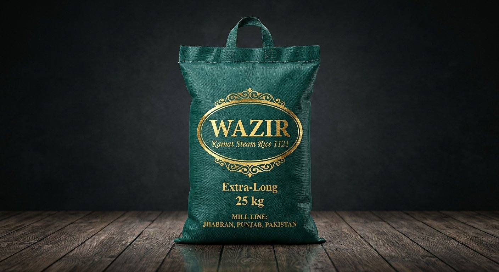

Ziyarat · Green · Steam 1121 · 5 / 10 / 20 / 25 kg
Kainat Steam Rice 1121
Extra-long 1121, steamed. Soft plate for pulao.
View pack→Products
Three marks. Open a pack to turn it 360°.
Extra-long 1121, steamed. Soft plate for pulao.
View pack→
Extra-long 1121, parboiled. Holds in a degh.
View pack→
Gold Classic. Kainat basmati sella, extra-long.
View pack→
Classic steam. Extra-long Kainat basmati.
View pack→
Everyday basmati. Not the 1121 extra-long sack.
View pack→
Short grain. Closer cook. Not 1121.
View pack→
Broken rice for catering. Not whole 1121.
View pack→
Everyday basmati. Below Classic and 1121.
View pack→
Sultan mark. Kainat basmati sella, extra-long.
View pack→
Sultan short grain. Not extra-long 1121.
View pack→
Wazir mark. Kainat basmati sella, extra-long.
View pack→
Wazir mark. Extra-long steam 1121.
View pack→